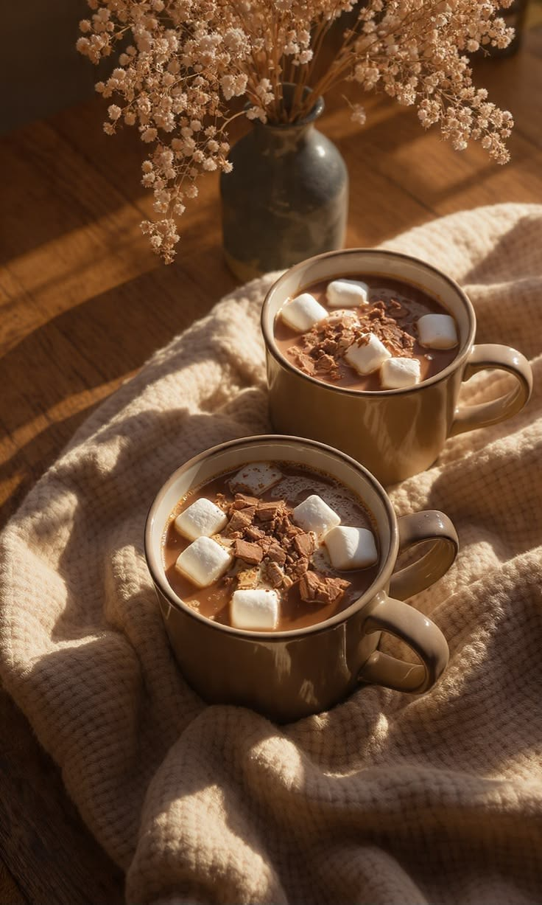

Velvet Dark Hot Chocolate
Recipe
A rich, thick, and cozy winter drink made with real dark chocolate and warm spices. Perfect for chilly nights.

Prep Time: 5 Minutes
Cook Time: 10 Minutes
Servings: 2 Mugs
Ingredients
- 2 cups of whole milk (or oat milk for a dairy-free option)
- 100g of high-quality dark chocolate (
50% 70% cocoa), finely chopped
- 2 tablespoons of unsweetened cocoa powder
- 1 tablespoon of brown sugar (or maple syrup)
- 1/2 teaspoon of pure vanilla extract
- A pinch of sea salt
- A pinch of cinnamon (optional for extra warmth)
Preparation Steps
- Pour the milk into a small saucepan over medium heat and warm it up until small bubbles appear around the edges. Do not let it boil.
- Whisk in the cocoa powder, brown sugar, sea salt, and cinnamon until completely smooth and lump-free.
- Lower the heat and add the chopped dark chocolate. Stir constantly until the chocolate is fully melted and the mixture thickens.
- Remove from heat and stir in the vanilla extract.
- Pour into your favorite winter mugs and top with whipped cream, toasted marshmallows, or a dusting of cocoa powder.
Quick Terms
- Simmer
- Heating liquid gently just below boiling point with small bubbles.
"The secret to an unforgettable hot chocolate is using real chopped chocolate bars instead of just cocoa powder—it gives that silky, café-style texture."